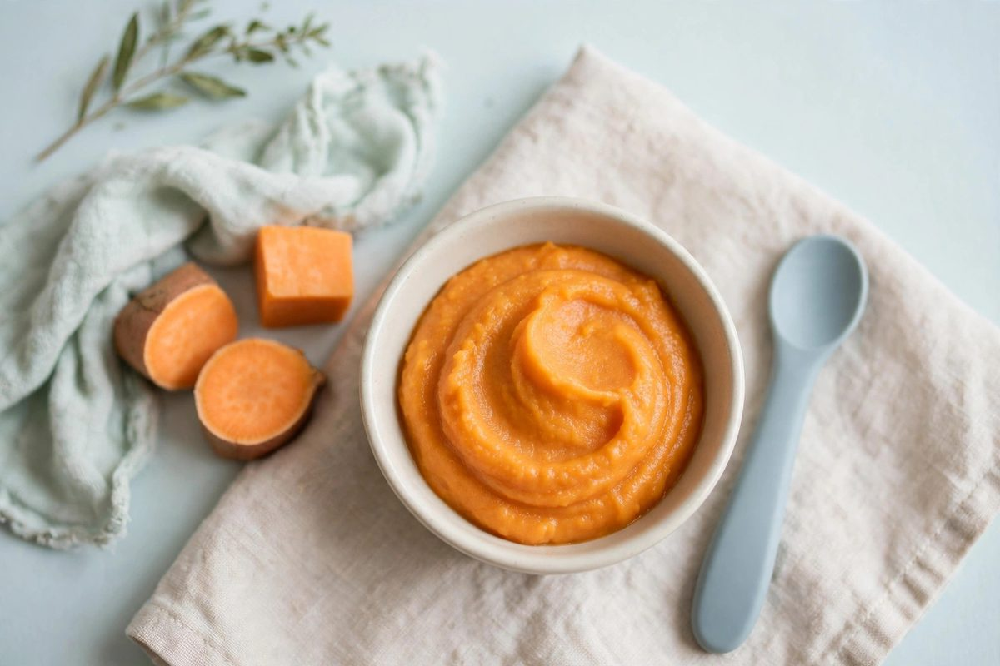

Home » Guides
First Foods at 6 Months

Around six months of age, most babies are ready to start tasting solid foods alongside breast milk or formula. Milk remains their main source of nutrition for the whole first year, so these first tastes are about learning, not about filling up. Starting solids is an exciting milestone, but it can also feel uncertain: parents wonder which foods to offer first, how much to give, and how to tell whether their baby is ready. This guide answers those questions with practical, plain advice you can use from the very first spoonful.
Signs your baby is ready
Age alone is not the only clue. Look for a combination of signs: your baby can sit up with support and hold their head steady, they can pick up food and bring it to their mouth, and they show interest in what you are eating by watching or reaching for it. They should also be able to swallow food rather than pushing it straight out with their tongue, although the tongue-thrust reflex can take a few days to fade. Most babies show these signs at around six months. Starting much earlier is not recommended, because a younger baby's gut and kidneys are not ready, and there is no advantage in rushing.
Which foods to offer first
There is no single correct first food. Good choices are soft, single-ingredient foods that are easy to mash: cooked carrot, sweet potato, parsnip, apple, pear, banana, and avocado are all popular first tastes. Iron-rich foods matter from the start, because a baby's iron stores from birth begin to run low at around six months, so well-cooked lentils, meat purees, and iron-fortified baby cereals are valuable early additions. Offer one new food at a time for a few days so you can spot any reaction. There is no need to offer only bland food or to delay flavours; babies can enjoy herbs and mild spices from the beginning.
How to offer the first tastes
Start with one small meal a day, offered after a milk feed when your baby is calm and alert rather than tired or very hungry. Sit them upright in a highchair and use a small, soft-tipped spoon. Place a tiny amount on the tip of their tongue and wait; many babies will grimace, spit it out, or look surprised, and that is normal. Never force a spoonful in, and never add food to a bottle. Keep the first sessions short and relaxed, just a few spoonfuls, and end while it is still fun. Over days and weeks, gradually increase the amount and the thickness as your baby gets used to eating.
What to avoid at six months
Some foods should wait. Do not give honey before twelve months, because it can carry a risk of infant botulism. Avoid added salt and sugar entirely, and do not offer cow's milk as a main drink before twelve months, although small amounts in cooked food are fine. Whole nuts, whole grapes, raw hard vegetables, and chunks of hard food are choking hazards. Avoid processed foods, ready meals, and anything with added salt. Fruit juice is not needed; water in a small cup is the best extra drink. If your baby refuses food, do not worry: keep offering calmly over the following days and weeks.
Your first week of solids
A simple first week takes the pressure off. On day one, offer a few spoonfuls of carrot puree after the morning milk feed. On day two, try the same food again, because repetition helps your baby learn. On day three, add a second food, such as apple puree, at a different meal. By the end of the week, your baby will have tasted two or three foods and will be used to sitting in the highchair. Keep a short note of what you offered and how your baby reacted, because it helps you spot patterns and gives your pediatrician useful information if you ever need advice.
Frequently Asked Questions
How much food should a six-month-old eat?
Very little. A few teaspoons a day is plenty at first. The amount grows naturally over weeks as your baby learns to eat. Milk still provides most of their nutrition.
Should I start with fruit or vegetables?
Either is fine. Some parents start with vegetables to build a taste for savoury foods, but there is no evidence that starting with fruit makes babies refuse vegetables later.
What if my baby refuses every spoonful?
Stay calm and keep offering for a few days. Some babies need ten or more tries before accepting a new food. If refusal continues for several weeks, talk to your pediatrician or health visitor.
Important: every baby is different. Always follow your pediatrician's advice on when to start solids, which foods to offer, and how to introduce allergens. The guidance on this site is general information, not medical advice.